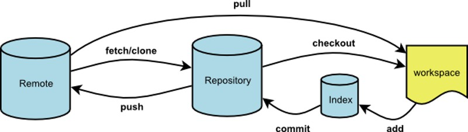

一、git clone
远程操作的第一步，通常是从远程主机克隆一个版本库，这时就要用到git clone命令。
$ git clone <版本库的网址>
比如，克隆jQuery的版本库。
$ git clone https://github.com/jquery/jquery.git
该命令会在本地主机生成一个目录，与远程主机的版本库同名。如果要指定不同的目录名，可以将目录名作为git clone命令的第二个参数。
$ git clone <版本库的网址> <本地目录名>
git clone支持多种协议，除了HTTP(s)以外，还支持SSH、Git、本地文件协议等，下面是一些例子。
$ git clone http[s]://example.com/path/to/repo.git/
$ git clone ssh://example.com/path/to/repo.git/
$ git clone git://example.com/path/to/repo.git/
$ git clone /opt/git/project.git
$ git clone file:///opt/git/project.git
$ git clone ftp[s]://example.com/path/to/repo.git/
$ git clone rsync://example.com/path/to/repo.git/
SSH协议还有另一种写法。
$ git clone [user@]example.com:path/to/repo.git/
通常来说，Git协议下载速度最快，SSH协议用于需要用户认证的场合。各种协议优劣的详细讨论请参考官方文档。
二、git remote
为了便于管理，Git要求每个远程主机都必须指定一个主机名。git remote命令就用于管理主机名。
不带选项的时候，git remote命令列出所有远程主机。
$ git remote
origin
使用-v选项，可以参看远程主机的网址。
$ git remote -v
origin git@github.com:jquery/jquery.git (fetch)
origin git@github.com:jquery/jquery.git (push)
上面命令表示，当前只有一台远程主机，叫做origin，以及它的网址。
克隆版本库的时候，所使用的远程主机自动被Git命名为origin。如果想用其他的主机名，需要用git clone命令的-o选项指定。
$ git clone -o jQuery https://github.com/jquery/jquery.git
$ git remote
jQuery
上面命令表示，克隆的时候，指定远程主机叫做jQuery。
git remote show命令加上主机名，可以查看该主机的详细信息。
$ git remote show <主机名>
git remote add命令用于添加远程主机。
$ git remote add <主机名> <网址>
git remote rm命令用于删除远程主机。
$ git remote rm <主机名>
git remote rename命令用于远程主机的改名。
$ git remote rename <原主机名> <新主机名>
三、git fetch
一旦远程主机的版本库有了更新（Git术语叫做commit），需要将这些更新取回本地，这时就要用到git fetch命令。
$ git fetch <远程主机名>
上面命令将某个远程主机的更新，全部取回本地。
git fetch命令通常用来查看其他人的进程，因为它取回的代码对你本地的开发代码没有影响。
默认情况下，git fetch取回所有分支（branch）的更新。如果只想取回特定分支的更新，可以指定分支名。
$ git fetch <远程主机名> <分支名>
比如，取回origin主机的master分支。
$ git fetch origin master
所取回的更新，在本地主机上要用"远程主机名/分支名"的形式读取。比如origin主机的master，就要用origin/master读取。
git branch命令的-r选项，可以用来查看远程分支，-a选项查看所有分支。
$ git branch -r
origin/master
$ git branch -a
* master
remotes/origin/master
上面命令表示，本地主机的当前分支是master，远程分支是origin/master。
取回远程主机的更新以后，可以在它的基础上，使用git checkout命令创建一个新的分支。
$ git checkout -b newBrach origin/master
上面命令表示，在origin/master的基础上，创建一个新分支。
此外，也可以使用git merge命令或者git rebase命令，在本地分支上合并远程分支。
$ git merge origin/master
# 或者
$ git rebase origin/master
上面命令表示在当前分支上，合并origin/master。
四、git pull
git pull命令的作用是，取回远程主机某个分支的更新，再与本地的指定分支合并。它的完整格式稍稍有点复杂。
$ git pull <远程主机名> <远程分支名>:<本地分支名>
比如，取回origin主机的next分支，与本地的master分支合并，需要写成下面这样。
$ git pull origin next:master
如果远程分支是与当前分支合并，则冒号后面的部分可以省略。
$ git pull origin next
上面命令表示，取回origin/next分支，再与当前分支合并。实质上，这等同于先做git fetch，再做git merge。
$ git fetch origin
$ git merge origin/next
在某些场合，Git会自动在本地分支与远程分支之间，建立一种追踪关系（tracking）。比如，在git clone的时候，所有本地分支默认与远程主机的同名分支，建立追踪关系，也就是说，本地的master分支自动"追踪"origin/master分支。
Git也允许手动建立追踪关系。
git branch --set-upstream master origin/next
上面命令指定master分支追踪origin/next分支。
如果当前分支与远程分支存在追踪关系，git pull就可以省略远程分支名。
$ git pull origin
上面命令表示，本地的当前分支自动与对应的origin主机"追踪分支"（remote-tracking branch）进行合并。
如果当前分支只有一个追踪分支，连远程主机名都可以省略。
$ git pull
上面命令表示，当前分支自动与唯一一个追踪分支进行合并。
如果合并需要采用rebase模式，可以使用--rebase选项。
$ git pull --rebase <远程主机名> <远程分支名>:<本地分支名>
如果远程主机删除了某个分支，默认情况下，git pull 不会在拉取远程分支的时候，删除对应的本地分支。这是为了防止，由于其他人操作了远程主机，导致git pull不知不觉删除了本地分支。
但是，你可以改变这个行为，加上参数 -p 就会在本地删除远程已经删除的分支。
$ git pull -p
# 等同于下面的命令
$ git fetch --prune origin
$ git fetch -p
五、git push
git push命令用于将本地分支的更新，推送到远程主机。它的格式与git pull命令相仿。
$ git push <远程主机名> <本地分支名>:<远程分支名>
注意，分支推送顺序的写法是<来源地>:<目的地>，所以git pull是<远程分支>:<本地分支>，而git push是<本地分支>:<远程分支>。
如果省略远程分支名，则表示将本地分支推送与之存在"追踪关系"的远程分支（通常两者同名），如果该远程分支不存在，则会被新建。
$ git push origin master
上面命令表示，将本地的master分支推送到origin主机的master分支。如果后者不存在，则会被新建。
如果省略本地分支名，则表示删除指定的远程分支，因为这等同于推送一个空的本地分支到远程分支。
$ git push origin :master
# 等同于
$ git push origin --delete master
上面命令表示删除origin主机的master分支。
如果当前分支与远程分支之间存在追踪关系，则本地分支和远程分支都可以省略。
$ git push origin
上面命令表示，将当前分支推送到origin主机的对应分支。
如果当前分支只有一个追踪分支，那么主机名都可以省略。
$ git push
如果当前分支与多个主机存在追踪关系，则可以使用-u选项指定一个默认主机，这样后面就可以不加任何参数使用git push。
$ git push -u origin master
上面命令将本地的master分支推送到origin主机，同时指定origin为默认主机，后面就可以不加任何参数使用git push了。
不带任何参数的git push，默认只推送当前分支，这叫做simple方式。此外，还有一种matching方式，会推送所有有对应的远程分支的本地分支。Git 2.0版本之前，默认采用matching方法，现在改为默认采用simple方式。如果要修改这个设置，可以采用git config命令。
$ git config --global push.default matching
# 或者
$ git config --global push.default simple
还有一种情况，就是不管是否存在对应的远程分支，将本地的所有分支都推送到远程主机，这时需要使用--all选项。
$ git push --all origin
上面命令表示，将所有本地分支都推送到origin主机。
如果远程主机的版本比本地版本更新，推送时Git会报错，要求先在本地做git pull合并差异，然后再推送到远程主机。这时，如果你一定要推送，可以使用--force选项。
$ git push --force origin
上面命令使用--force选项，结果导致远程主机上更新的版本被覆盖。除非你很确定要这样做，否则应该尽量避免使用--force选项。
最后，git push不会推送标签（tag），除非使用--tags选项。
$ git push origin --tags